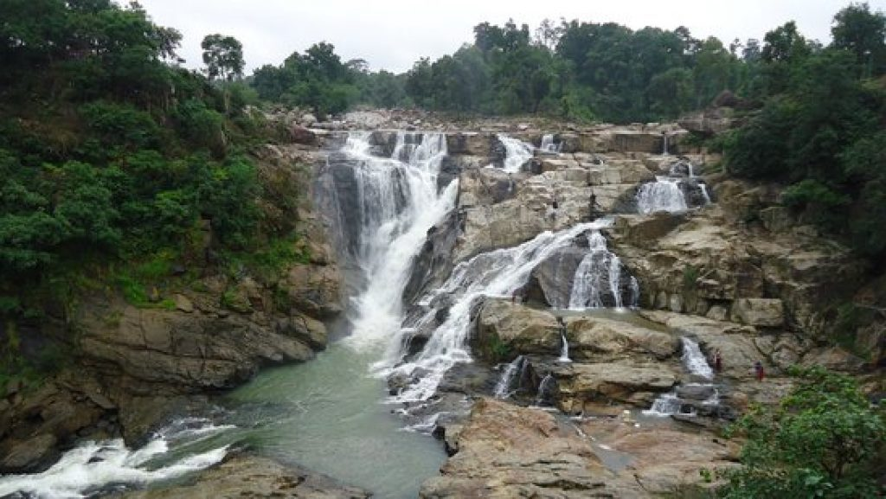
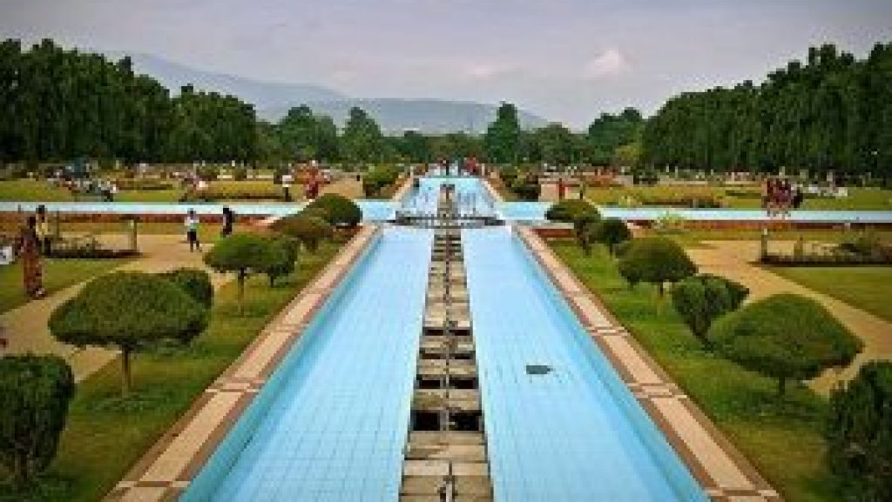
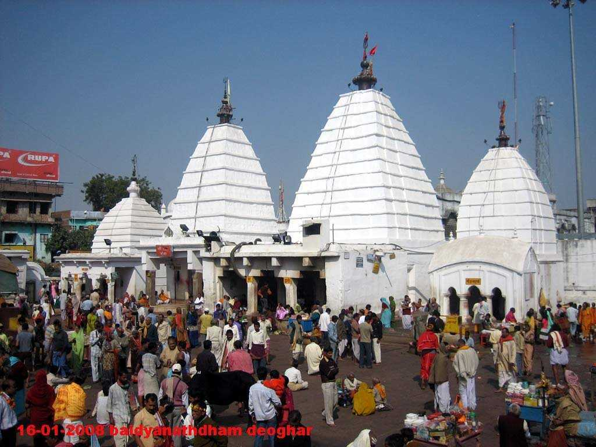
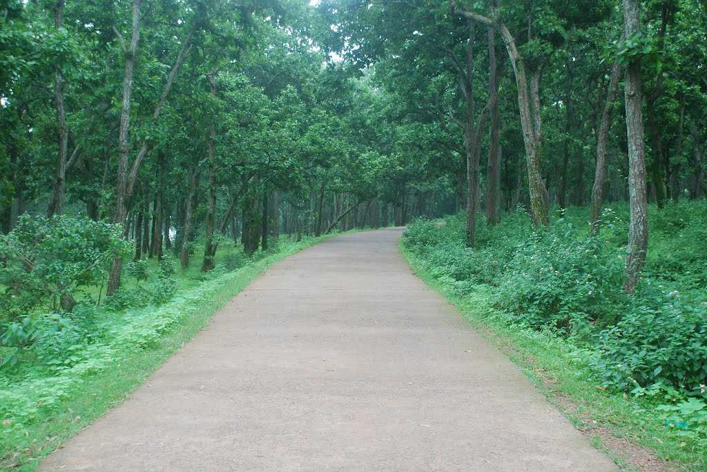
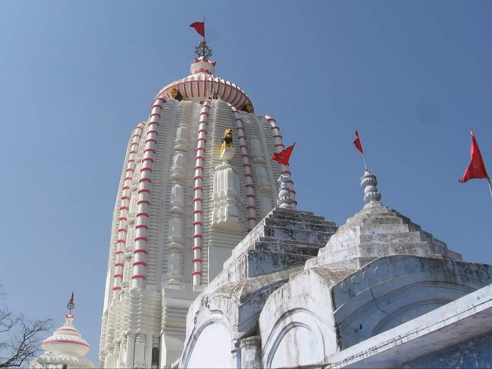
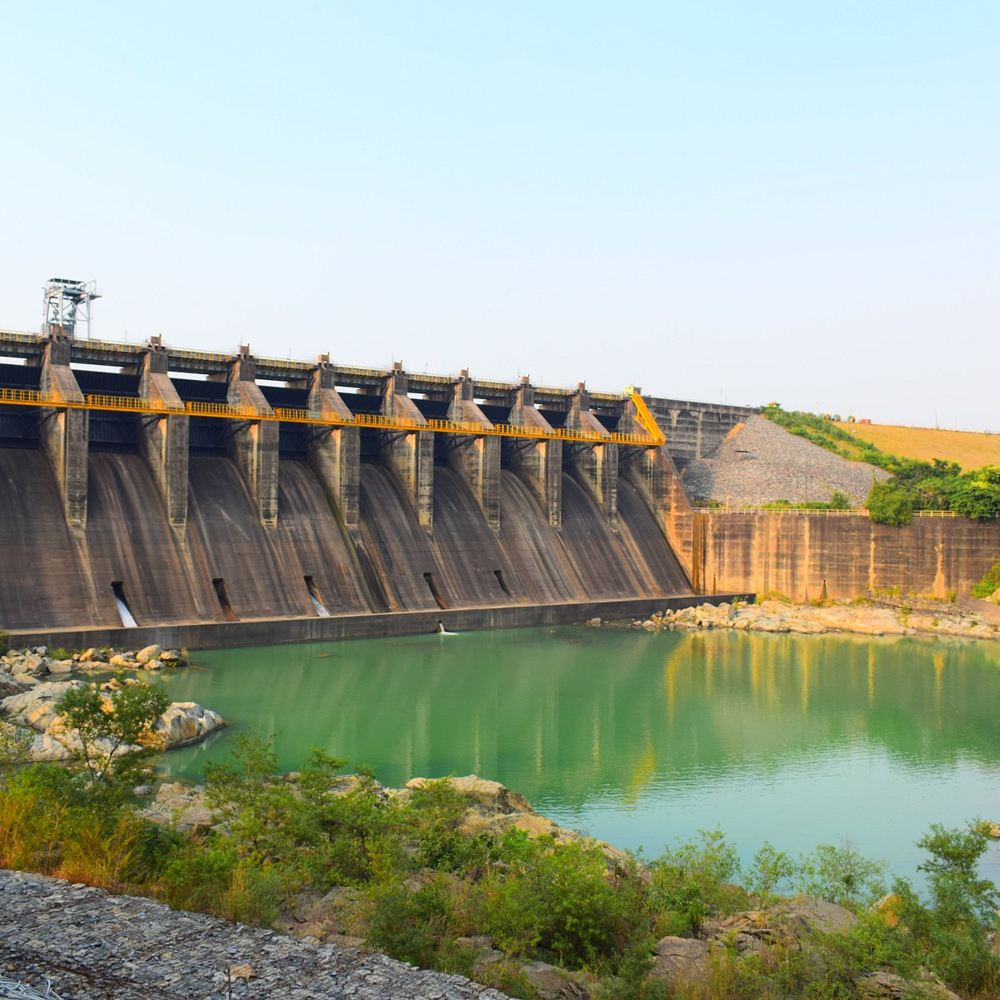

JHARKHAND
Jharkhand also known as ‘Land of Forest’ is one of the most undiscovered and underrated place in India. The state is indeed overloaded with scenic beauty that your eyes can not behold. Hills, forests, wildlife, waterfalls, historic sites, pilgrimage, Jharkhand has all of this and much more to be explored.
It is ideal to visit Jharkhand between October to March as the climatic conditions are most suitable for sightseeing during these months.
TOP 7 DESTINATIONS:-
1.DASSAM FALLS-RANCHI
2.JUBILEE PARK-JAMSHEDPUR
3.BABA BAIDYANATH TEMPLE-DEOGHAR
4.JONHA FALLS-RANCHI
5.NETARHAT
6.JAGANNATH TEMPLE-RANCHI
7.MAITHON DAM-DHANBAD
1.DASSAM FALLS-RANCHI

- About:
The Dassam Falls is situated at 34 km from the city of Ranchi on Ranchi-Tata road near the Taimara village. The place is also known as Dassam Garh. The major water source of this waterfall is River Kachni, which falls here from an altitude of 144 feet. The unique feature of this fall is that when the waterfall is seen, 10 water streams are also seen falling.
- By Air:
Nearest airport is Birsa Munda Airport which is 31 km away from this
- By Train:
It is almost 26 km away from Ranchi Railway Station
- By Road:
Birsa Munda Bus Stand kantatoli is 24 km away from dassam fall
2.JUBILEE PARK-JAMSHEDPUR

- About:
It is a popular destination for all those who wish to have an outdoor picnic, enjoy some outdoor activities and games or even just to have a relaxing day out with friends and family. Within, it has a lake, amusement park, recreation center, fountains and a zoo, amongst other attractions, making it a great place for some fun for people of all ages.
- Open: 7:00 AM - 7:00 PM
- Entry fee: none
Fountain Laser and Music Show- INR 35
Zoological Park- Adults: INR 30, Children: INR 20, Handicapped: Free
Amusement- INR 90
- location:The Jubilee Park is located in the steel city, Jamshedpur.
3.BABA BAIDYANATH TEMPLE-DEOGHAR

- About:
Baidyanath Dham Temple is one of the most scared abodes of Lord Shiva and also known as Baidyanath Jyotirlinga temple & Baba Baidyanath Dham. Baba Baidyanath dham is located in Deoghar in the Santhal Parganas division of the state of Jharkhand, India.
- Open:Mon to Sun Morning Hours 04:00 to 15:30
Mon to Sun Evening Hours 18:00 to 21:00
- Entry fee:none
- The nearest station is Jasidih, about 8 km away.
- The nearest airport is Ranchi Airport, about 250 km away.
4.JONHA FALLS-RANCHI

- About:
About 45 kms away from Ranchi situated on the Ranchi-Purulia Highway, is the Jonha Falls, named after the local village. It is also known as the Gautamdhara, as there is a temple dedicated to Lord Budha, in its vicinity. The rocks here seem to beckon you down its natural gradient to join the frothy gurgling water of the River. The fall appears relatively more somber, enhancing the picturesque charm of the spot.
- By Air:
The Nearest Airport is Birsa Munda Airport which is almost 45km from here
- By Train:
From Ranchi Railway station it is near about 39 km .It is situated between Ranchi -Muri Route.
- By Road:
From Birsa Munda Bus Terminal Kantatoli it is near about 36 km.
5.NETARHAT

- About:
Falling in the Latehar district of Jharkhand, Netarhat is the highest point of Chotanagpur plateau, popularly known as Queen of Chotanagpur. It is best known for the sunrise and sunset views it offers, especially during summers. It is also notable for the renowned Netarhat Residential School which was started in the year 1954
- places to visit in netarhat:
- Betla National Park
- Magnolia Point
- Upper ghagri waterfalls
- Lower ghagri waterfalls
- pine forest
6.JAGANNATH TEMPLE-RANCHI

- About:
Jagannath temple in Ranchi is an important pilgrimage centre and major tourist attraction of Jharkhand. The construction work of the temple was completed by the king of Barkagarh Jagannathpur, Thakur Ani Nath Shahdeo on one of the holiest days of English calender, 25th December in the year 1691. Since then it has been an eminent tourist attraction in the whole of Jharkhand.
- Open:6 am - 7.30 pm
- Entry fee:none
- location:Jagannathpur Chowk Khataal, Sector 1 Jagannathpur, hec, Khataal, Dhurwa, Khataal, Jagannathpur, Ranchi, Jharkhand 834004
7.MAITHON DAM-DHANBAD

- About:
Maithon, derived its name from “Mai Ka Sthan”, meaning the place for the Hindu Goddess Maa Kalyaneshwari.Maithon was constructed by the Damodar Valley Corporation across river Barakar, a tributary of river Damodar in the year 1957 as a flood control measure. The Maithon dam itself is located on a picturesque landscape amidst a beautiful lake and beautiful green forests.
- Open: 24 hours
- Entry fee:none
- location:It is located on the banks of river Barakar. The Maithon Dam is located about 48 kms from the Coal City of Dhanbad.